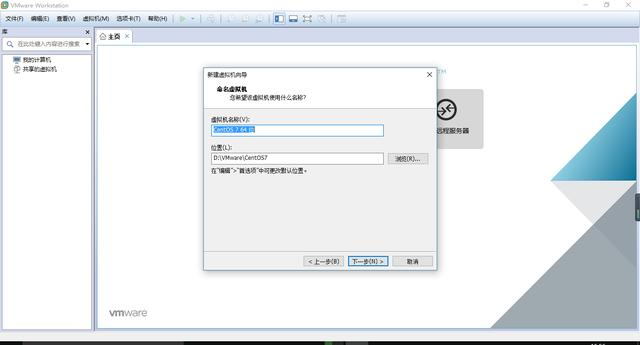
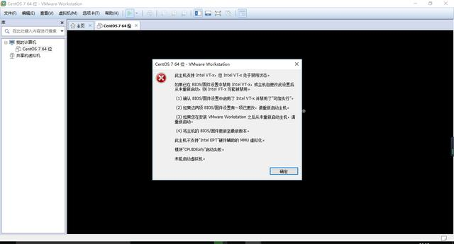

1.1.1. 分布式专题需要搭建虚拟机，大家可以按照以下步骤去安装自己的虚拟机
VMware Workstation14安装CentOS7.0 详情教程
1. 上课环境： vmware workstation + centos7.0 +jdk1.8 +IntelliJ IDEA
2.vmware下载地址：传送门)
3.centos7.0下载地址：http://isoredirect.centos.org/centos/7/isos/x86_64/CentOS-7-x86_64-Everything-1804.iso
4.vmware+centos7安装图文教程：
http://blog.csdn.net/alex_my/article/details/38142229
5.centos7.0已经做好的镜像：下载地址：传送门](https://pan.baidu.com/disk/home#/all?vmode=list&path=%2F%E8%99%9A%E6%8B%9F%E6%9C%BA%E7%8E%AF%E5%A2%83%E6%90%AD%E5%BB%BA)
root和其他账户的密码:tanfeng112
其他软件xshell、xftp ：直接百度搜索第一个就是下载地址
1.准备工作
a)下载VMware workstation14
b)下载CentOS7
c)下载SSH Secure Shell Client
2.虚拟机配置
a)打开虚拟机软件“VMware Workstation”，选择“创建新的虚拟机”

b)选择“典型”选项，点击“下一步”
c)选择“稍后安装操作系统”，点击“下一步”
d)客户机操作选择“Linux”,版本选择“CentOS 7 64位”，点击“下一步”
e)输入“虚拟机名称”；点击“浏览”按钮，选择虚拟机文件保存的位置；点击“下一步

f)默认设置，选择“下一步”
g)自定义硬件配置
h)选择“新CD/DVD”, 选择“使用ISO镜像文件”，然后点击“浏览”，找到刚才下载的centOS7镜像文件，然后点击下面的确定
i)点击“完成”
3.安装centOs7
a)开启虚拟机
b)如果出现下图的错误，需要到BIOS中设置（百度搜索一大堆解决方案）

c)选择语言“中文-简体中文”
d)接下来显示“安装信息摘要”页面；
点击其中的每一项进行设置，也可以使用默认设置；
软件选择：决定了系统安装后包括哪些功能，如果使用默认值，那么系统安装后是没有图形界面的；选择“GNOME 桌面”，会显示图形界面；本着学习的目的，这里选择默认设置“最小安装”；如果怕麻烦，直接选择GNOME桌面